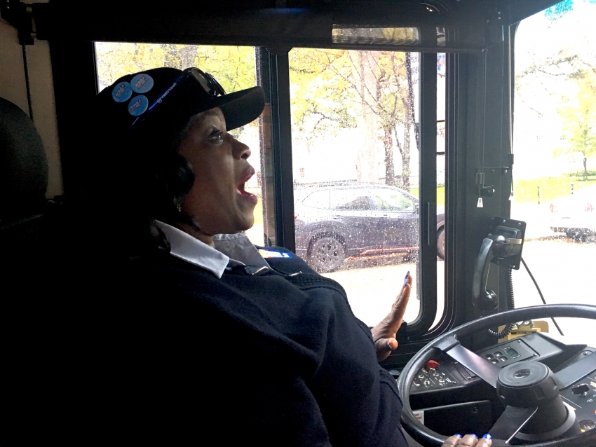

In Wisconsin, the Teamsters Faced a Revolt from Below
Tues. Dec. 3, 2019 by Alice Herman
Every day, Nikki Sampson drives from her home in Portage to Madison, where she works as a dispatcher for the city's bus service. To get there, she drives along a 40-mile stretch of highway, which crosses the Wisconsin River twice and then slices south through farms and municipalities. That road lies at the heart of the region represented by Sampson's 4,256-strong union—Teamsters Local 695.
Sampson has worked for Metro transit for over 20 years, and says that as a younger employee there, she counted on the union to fight for workers in contract negotiations and file grievances on their behalf when things went wrong. But over the last two decades, Sampson says, the union has developed a reputation as weaker, and unable—even unwilling—to push back against managerial wrongdoing.
"We on the floor are our own union representation. We assist each other with filing a grievance," says Sampson. "We go to fellow coworkers and we get together and we look over our union contract." Sampson says that she has regularly looked into grievances on behalf of her coworkers—rather than stewards, the workers who represent the union on the shop floor.
So Sampson and her colleagues ran a campaign to elect a new slate of officials to head the Teamsters local. The slate, which called itself Rebuild 695 and was comprised mostly of Madison Metro Transit employees, came 96 votes short of unseating the incumbent leadership of the local on Friday, October 25.
Given that the slate had only a 100-day notice for the election, it is notable that it came this close to winning.
The reform push in the Wisconsin local has grown out of a broader push to reform Teamsters by electing members to leadership locally and nationally. In the last two years, Teamsters members in Washington D.C.,Texas and, most recently, North Carolina, have successfully installed reformers in office at their locals.
The recent reform campaign by members of Teamsters Local 71 in North Carolina yielded an overwhelming win for the reform slate, with 757 votes cast for reform candidates and 286 for the incumbent. Teamsters for a Democratic Union (TDU), a coalition of Teamsters members that has fought corruption in the union and won members the right to elect the union's leadership, hailed the North Carolina reform effort a "grassroots victory" and wrote in a blog post about the election that leadership had "paid the price for being out-of-touch with the rank-and-file."
Formed in 1976, TDU has pushed for more equitable pay structures within the union and backed reform campaigns nationally. In 2016, TDU-backed Fred Zuckerman nearly unseated Teamsters president James P. Hoffa, who has held office since 1999 and has faced corruption investigations.
For reform-minded union activists like those at Madison's Metro Transit, TDU offers guidance for running a local campaign. According to Jake Puls, who ran for president of the Rebuild 695 slate, the reformers consulted TDU materials in preparation for its campaign.
The Local 695 reform candidates pointed to declining membership and increasing salaries for leadership of the local as evidence of a disconnect between workers and their representatives: Membership fell by about 40% between 2000 and 2018, and the top three union officials earned approximately $130,000 as of last year. The reform campaign attributes member attrition to disenchantment with the union, while current leadership at 695 argues that the closure of businesses explains most of the decline in membership since 2000. The union has lost 223 members to decertification, which accounts for about 16% of membership loss since 2011.
Local 695 officials defend their salaries, arguing that officer salaries are on par with other union leaders in the country and that "it is a good paying job, but so are other jobs that require years of experience and no time off."
Members also identified aspects of the local's current bylaws as undemocratic. The bylaws include, for example, a rule that stewards "shall be selected and removed in such a manner as the local union executive board or the principal executive officer may direct." This wording indicates that whether stewards are elected or appointed is up to the executive board, which can override the results of an election with its own appointee.
Sampson, who has spoken about racism in her workplace since as early as 2014, says that she has found little support from stewards at her local in challenging discriminatory hiring and disciplinary practices by management. And when she ran for the position of steward, Sampson says she was met with resistance from the union.
"I was voted in as a union steward, and they did not like that at all," said Sampson. Two weeks after she took the position, Sampson says, she was removed and replaced by a steward that the union appointed.
The Rebuild platform promised to adjust salaries for union leadership and campaigned on a platform to expand communication between union officials and membership by "[building] a website for our local, send[ing] emails & text messages and start[ing] newsletters so that Teamster members know what is happening in the local and know how to get involved."
Instead of union leadership reserving the right to appoint shop stewards, the Rebuild slate said that it would work with members to institute regular elections for the steward position, arguing that elections will "make sure union stewards are doing what the members want."
Sampson said that she hoped the Rebuild candidates would push hard against contract violations by management. "[Management] understands that we have such a weak union at this point," says Sampson. In 2014, Sampson and three other Metro Transit workers went to local press to protest what they identified as racist hiring and promotional practices, which were prohibited by the union contract. Sampson is emphatic that the union did not help and has not been friendly to her and her coworkers' complaints of racial discrimination.
Puls said that the campaign was predicated on the goal of establishing direct channels of communication between members and the local, and avenues for members to fight for better work conditions.
"The more you get people to feel like they matter and that they have a voice, the more they stick together and the stronger the union becomes," says Puls.
The Rebuild slate and its supporters also say that union members at shops around the state perceive stewards as reluctant to file grievances and slow to meet with workers to talk about issues at work.
"We always went to our stewards. And our stewards would just blow it off. You have no idea how many times we were told by stewards, 'Oh no, you shouldn't file a grievance, oh no, you can't file a grievance,'" says Sampson. She says that while campaigning, the reform slate met with members at other shops complained that stewards were "best friends with management" and unwilling to help file a grievance.
Representatives of local 695 responded to the allegation that members around the state did not have knowledge of union operations and personnel such as business agents (who are the primary point of contact between shops and the local headquarters), calling the claim "just silly." Union leaders also dismissed claims that they had not maintained communication with members in a campaign blog post: "Members can attend our General Meetings that are held on the third Tuesday of every month...Be active in the Union, run for steward!"
Still, Soncerethia (Sonci) Stone, who currently works as a bus driver for Metro Transit and ran for vice president of 695, emphasized the need for transparency between the leadership and its members during contract negotiations in her local.
"The city of Madison is getting a whole lot off our backs. And nothing is returned. In some cases our work conditions are absolutely horrible, and they look at us like, 'Oh yeah, be glad you got a job,'" says Stone, citing 16-hour workdays and long periods without a bathroom break.
"Our plan going forward first off is to be totally transparent about what's going on, about what management is trying to do, what we can try to fix and how we can fix it, whether or not management is working with us or against us," Stone continues. "The employees need to know every detail of what's going on, especially as far as contract negotiation goes.
Workers at Madison's Metro Transit account for approximately 11% of the labor force in Teamsters 695, which represents union members in transportation, construction and other occupations across Southwest Wisconsin. To reach workers across the Wisconsin local, candidates on the Rebuild 695 slate traveled across the state, waiting near shops to intercept workers before and after shifts.
Candidates campaigning for the Rebuild slate were joined by fellow union members at Metro transit in Madison—some of whom say that they put in up to 20 hours a week off-the-clock on the campaign.
Cody Hanna, a mechanic at Metro transit, says that his familiarity with president-hopeful Puls, plus a sense of disillusionment with current union leadership, pushed him to not only support but actively campaign on behalf of the Rebuild team. Hanna says that he traveled to Janesville—about an hour drive from Madison—to speak with Teamsters members at shops there.
"You get a lot of people who are saying our contracts are so weak and our negotiation teams just kinda go with it and they don't fight it," Hanna says.
The election on October 25 was the first challenge the current leadership of local 695 has faced since 1998. Most top officials at the local have served for over 15 years; the incumbent officials—calling themselves the Wayne Schultz slate, in a nod to the current secretary treasurer—have run a campaign whose focal point was the relative experience of each set of candidates.
A flyer circulated by the incumbent campaign states, "It takes years of knowledge and training to keep the local running smoothly, and we know they don't have it."
Puls says the reform push in Wisconsin is far from over: "We have three years to plan for the next time ... We're not done, we're not giving up. And they know we're paying attention as members. Hopefully we've woken them up."
---------------------------------------------------------------------------------------------------
Source as of Dec. 5, 2019: http://inthesetimes.com/working/entry/22184/teamsters-for-a-democratic-union-wisconsin-labor-reform-movement